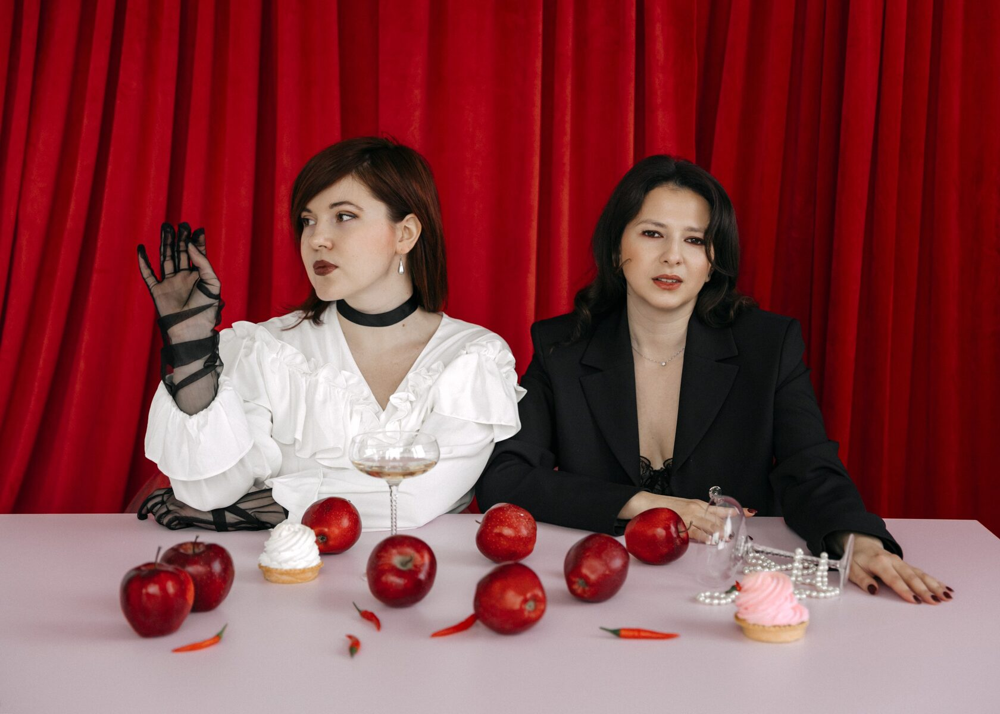
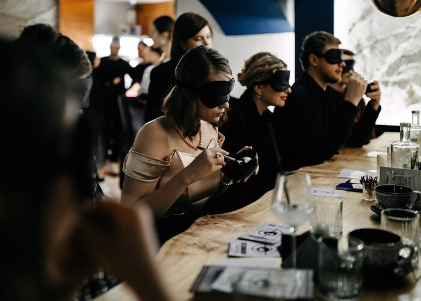
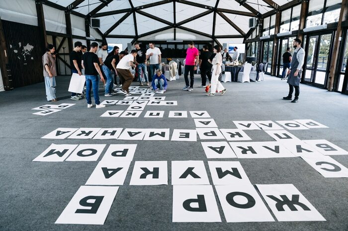

Едавступаетв игру.

Гастрономические игры, ужины
и события для ваших людей. Москва.

Гастрономические игры, ужины
и события для ваших людей. Москва.

Глаза закрыты. Три ингредиента в каждом блюде. Четыре раунда, чтобы договориться — или запутать всех за столом.
Хочу сыграть
День рождения, встреча команды или вечер с друзьями. Придумаем, что будет объединять вас за столом.
Придумать наш вечерВыберите настроение.
Сценарий соберём под ваш повод.
Угадываем ингредиенты с закрытыми глазами. Обсуждаем версии, ищем сообщников и доверяем вкусовой интуиции.
Ещё в меню: выездные ужины, фудквесты, мастер-классы и тематические вечеринки. Все форматы команды
Дарья Маслова
Алина Постаногова
Мы придумали «Гастроманьяков», чтобы собирать людей вокруг новых впечатлений. Через вкус, игру и любопытство.
Начинаем с разговора о вашем поводе. Затем соединяем идею, блюда и взаимодействие гостей в один сценарий.
Познакомиться в TelegramРасскажите, кого собираете.
Дату, площадку и стоимость
обсудим с вами лично.